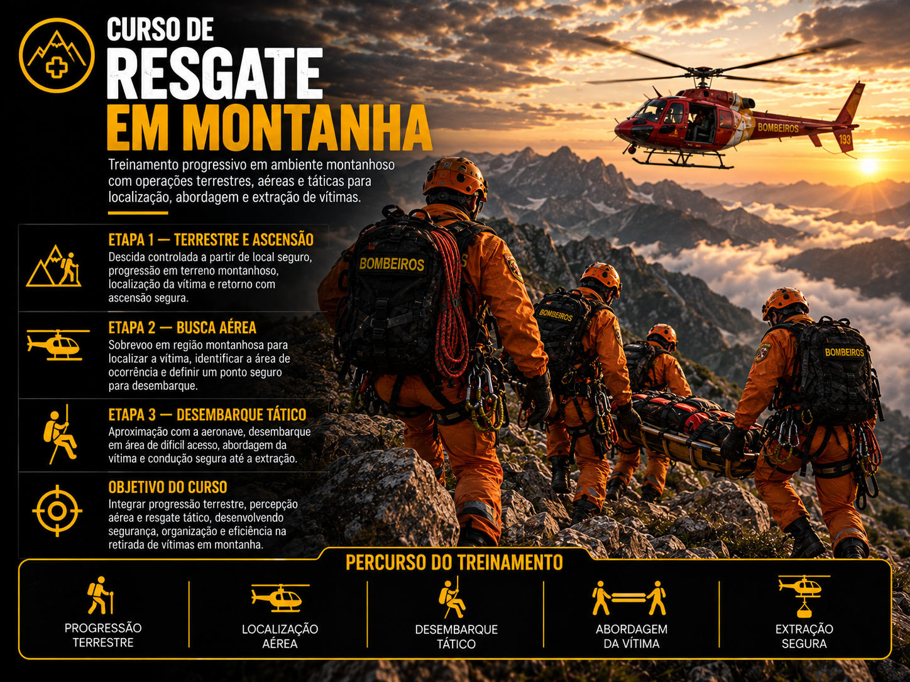
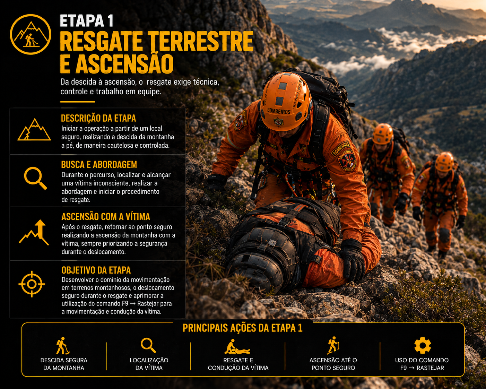
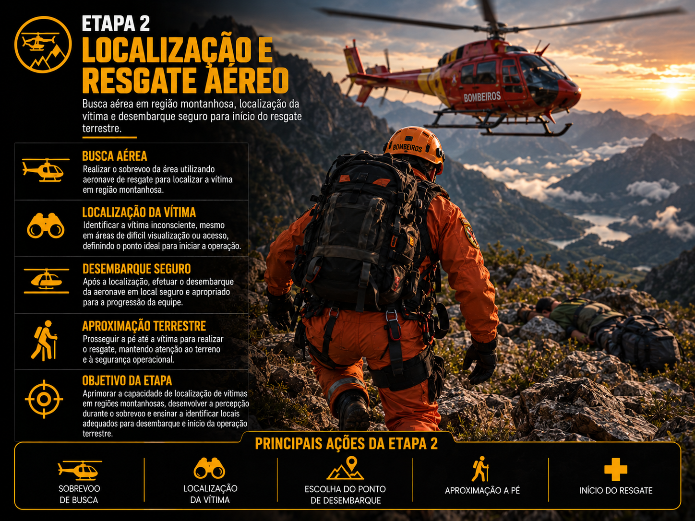
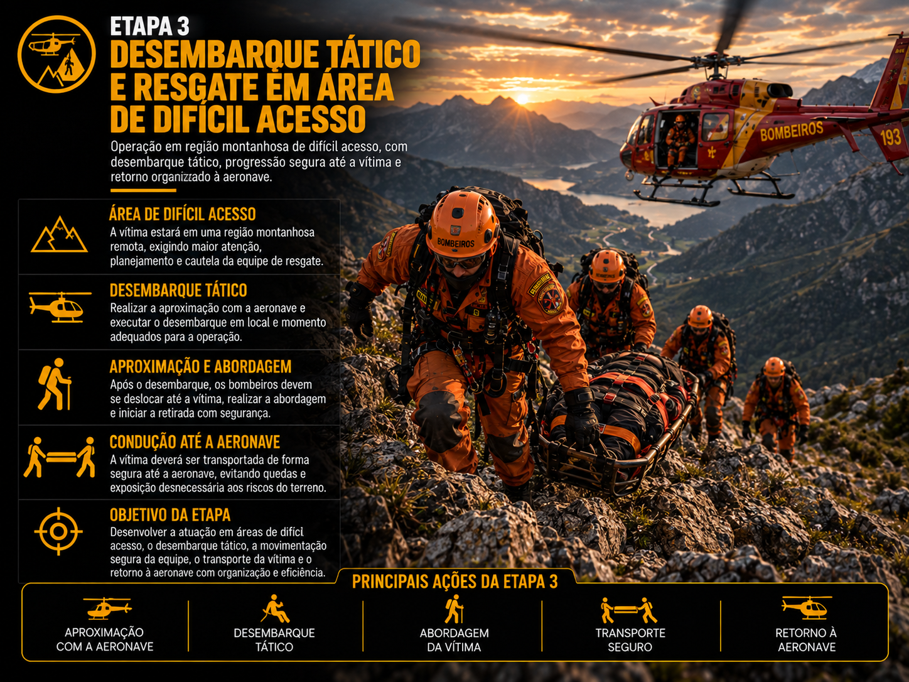
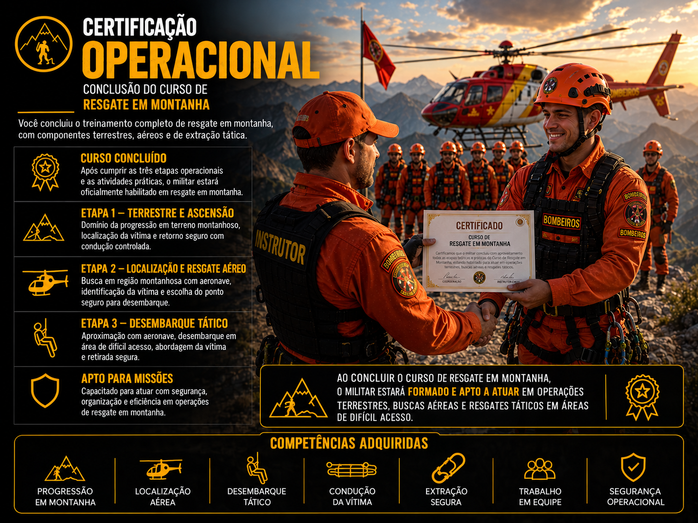

🚀 COMO EVOLUIR
Confira abaixo o tempo e os requisitos de cada promoção na corporação.
🎖️ Plano de Carreira e Progressão Funcional
A evolução no Corpo de Bombeiros é conquistada através de tempo de serviço dedicado, conclusão dos cursos obrigatórios e reconhecimento por mérito operacional. Clique em qualquer card abaixo para abrir os detalhes completos no modal com os requisitos da patente.


Resgate Aquático
"Onde a força da água desafia a sobrevivência, nasce a missão do especialista em Resgate Aquático."

O Curso de Resgate Aquático
É destinado aos militares que desejam atuar em operações de salvamento em rios, lagos,
represas, cachoeiras, áreas alagadas e regiões costeiras.
Durante a formação, o militar desenvolverá técnicas de navegação, busca, salvamento e
extração de vítimas em ambientes aquáticos, aprendendo a atuar com rapidez, segurança e
eficiência mesmo diante de fortes correntezas e cenários de difícil acesso.
A especialização exige excelente preparo físico, controle emocional, raciocínio rápido e
domínio das técnicas de resgate em água. Ao concluir todas as etapas, o militar estará
apto a integrar oficialmente a Equipe de Resgate Aquático da corporação.
Objetivo do Curso
Capacitar o militar para executar operações de busca, salvamento e resgate em ambientes aquáticos, utilizando embarcações, técnicas de navegação, procedimentos de mergulho e protocolos de atendimento a vítimas.
Requisitos
Para ingressar no Curso de Resgate Aquático, o militar deverá:
- Estar devidamente ativo na corporação;
- Demonstrar disciplina e comprometimento;
- Possuir bom condicionamento físico;
- Estar apto para atividades em ambiente aquático;
- Possuir autorização da coordenação de cursos, quando necessário.
Estrutura do Curso
O Curso de Resgate Aquático é dividido em três fases eliminatórias, desenvolvidas para preparar o militar para diferentes cenários operacionais encontrados em missões reais. Cada etapa avalia habilidades específicas, sendo necessário obter aprovação para prosseguir.

Fase I — Navegação (Controle da Embarcação)
A primeira fase é destinada ao domínio da embarcação. O militar aprenderá técnicas de pilotagem, controle e navegação em ambientes de difícil acesso, desenvolvendo precisão nas manobras e segurança durante as operações.
Durante esta etapa serão realizados treinamentos como:
- Pilotagem de embarcação de resgate;
- Navegação em rios e lagos;
- Aproximação segura em áreas rochosas;
- Manobras em cachoeiras e corredeiras;
- Controle da embarcação em espaços reduzidos;
- Posicionamento para operações de salvamento;
- Técnicas de infiltração em locais de difícil acesso.
Objetivo da Fase: Avaliar a capacidade do militar em controlar a embarcação com segurança, precisão e estabilidade, preparando-o para conduzir equipes de resgate em qualquer ambiente aquático.

Fase II — Correnteza (Resgate Operacional)
Após dominar a navegação, o militar inicia os treinamentos de salvamento em correntezas e áreas de alto risco. Nesta etapa serão simuladas ocorrências onde será necessário localizar, alcançar e retirar vítimas presas em ambientes aquáticos hostis.
Durante esta etapa serão realizados treinamentos como:
- Resgate de vítimas em correntezas;
- Extração de vítimas presas entre rochas;
- Salvamento em áreas de cachoeira;
- Resgate de vítimas presas em árvores ou obstáculos naturais;
- Transporte seguro da vítima até zona de segurança;
- Coordenação entre equipe de apoio;
- Não utiliza barco → Apenas para locomoção;
- Não utiliza helicóptero → Apenas para locomoção;
- Atendimento sob pressão e gerenciamento de riscos.
Objetivo da Fase: Atuar como um teste especializado onde os bombeiros devem desenvolver habilidades de subir correntezas longas, localizar a vítima, achar um local seguro e controlar os mecanismos de resgate (desembarcar e salvar a pessoa de forma segura).

Fase III — Profundezas (Busca e Recuperação)
A última fase representa a certificação operacional do militar. O aluno deverá realizar operações completas de busca subaquática, empregando técnicas de localização, mergulho e resgate de vítimas em ambientes de baixa visibilidade.
Durante a avaliação, o militar deverá demonstrar capacidade para localizar sobreviventes em áreas submersas e conduzi-los com segurança até a superfície.
Durante esta etapa serão avaliados:
- Resgate da vítima;
- Trabalho em equipe;
- Montagem de estratégia;
- Atenção no perímetro;
- Dedução de onde está a vítima;
- Comunicação com a aeronave.
Objetivo da Fase: Avaliar toda a preparação técnica do militar em missões de busca e resgate subaquático, simulando operações reais de alta complexidade.
Critérios de Aprovação & Certificação
Critérios Avaliados
O militar deverá obter desempenho satisfatório em todas as fases para receber sua certificação, sendo avaliado em:
- Disciplina e Condicionamento físico;
- Controle emocional e Pilotagem da embarcação;
- Técnicas de resgate e Trabalho em equipe;
- Comunicação e Segurança operacional;
- Cumprimento dos protocolos e Precisão durante as operações.
Competências Desenvolvidas
- Pilotagem de embarcações e Navegação operacional;
- Busca subaquática e Técnicas de mergulho;
- Gestão de riscos e Trabalho em equipe;
- Comunicação eficiente e Tomada rápida de decisão;
- Resistência física e Precisão operacional.

Após a Certificação
Ao concluir o Curso de Resgate Aquático, o militar estará habilitado para integrar oficialmente a equipe, pilotar embarcações, atuar em resgates aquáticos, buscas subaquáticas, apoiar enchentes e atuar em operações integradas.
Importância da Especialização
O Resgate Aquático desempenha um papel essencial nas operações da corporação, permitindo a atuação em ambientes onde o acesso terrestre é limitado ou inexistente. O militar especializado torna-se referência em ocorrências envolvendo águas, preservando vidas onde a força da água é o maior desafio.
"Onde a correnteza desafia a esperança, o especialista em Resgate Aquático encontra o caminho para salvar vidas."
Resgate em Montanha
"Nas alturas, a coragem e a técnica se encontram para salvar vidas onde poucos ousam chegar."

O Curso de Resgate em Montanha
É destinado aos militares que desejam atuar em operações de busca e salvamento em áreas
montanhosas, encostas e terrenos acidentados de difícil acesso.
Durante a formação, o militar aprenderá técnicas de progressão em terreno irregular,
resgate em ribanceiras, utilização de aeronaves em locais remotos e o emprego do comando
rastejar (F9) para condução de vítimas.
Objetivo do Curso
Capacitar o militar para executar operações de resgate em montanhas com segurança, dominando técnicas terrestres e aéreas para localização, abordagem e extração de vítimas em terrenos de difícil acesso.
Requisitos
- Estar ativo na corporação;
- Demonstrar cautela e técnica;
- Possuir bom controle na condução de vítimas.

1ª ETAPA — RESGATE TERRESTRE E ASCENSÃO
Nesta primeira etapa, o bombeiro deverá iniciar a operação a partir de um local
seguro, realizando a descida da montanha a pé, de maneira cautelosa e
controlada.
Durante o percurso, o bombeiro deverá localizar e alcançar uma vítima
inconsciente, realizar a abordagem e iniciar o procedimento de resgate.
Após alcançar a vítima, o bombeiro deverá retornar ao ponto seguro, realizando a
ascensão da montanha com a vítima, sempre priorizando a segurança durante o
deslocamento.
Objetivo da etapa: desenvolver o domínio da movimentação em terrenos montanhosos, o deslocamento seguro durante o resgate e, principalmente, aprimorar a utilização do comando F9 → Rastejar para a movimentação e condução da vítima.

2ª ETAPA — LOCALIZAÇÃO E RESGATE AÉREO
Nesta etapa, a equipe deverá realizar uma operação de busca utilizando uma
aeronave de resgate.
Uma vítima inconsciente estará localizada em alguma região das montanhas,
podendo estar em uma área de difícil visualização ou acesso. A equipe deverá
utilizar a aeronave para realizar a busca e localização da vítima, identificando
o local adequado para iniciar o resgate.
Após localizar a vítima, o bombeiro deverá realizar o desembarque da aeronave em
um ponto seguro e apropriado, prosseguindo a pé até a vítima para realizar o
resgate.
Objetivo da etapa: aprimorar a capacidade de localização de vítimas em regiões montanhosas, desenvolver a percepção durante o sobrevoo e ensinar o bombeiro a identificar locais adequados para desembarque e início da operação terrestre.

3ª ETAPA — DESEMBARQUE TÁTICO E RESGATE EM ÁREA DE DIFÍCIL ACESSO
Nesta etapa, a vítima estará localizada em uma região montanhosa de difícil
acesso, exigindo maior atenção, planejamento e cautela por parte da equipe de
resgate.
A equipe deverá realizar a aproximação com a aeronave e executar um desembarque
tático, escolhendo cuidadosamente o local e o momento adequado para deixar a
aeronave.
Após o desembarque, os bombeiros deverão se deslocar até a vítima, realizar sua
abordagem e efetuar a retirada da área. A vítima deverá ser conduzida até a
aeronave de forma segura, evitando quedas ou exposição desnecessária aos riscos
do terreno.
Após o embarque da vítima, a equipe deverá retornar à aeronave e realizar a
retirada do local com segurança.
Objetivo da etapa: desenvolver a capacidade de atuação em áreas de difícil acesso, trabalhando o desembarque tático, a movimentação segura da equipe, o transporte da vítima e o retorno à aeronave de maneira organizada e eficiente.
Critérios Avaliados
- Domínio da movimentação em terrenos acidentados;
- Aplicação correta do comando F9;
- Segurança no desembarque de aeronave;
- Trabalho em equipe.
Competências Desenvolvidas
- Resgate e ascensão terrestre;
- Localização aérea em áreas complexas;
- Desembarque tático e extração;
- Tomada de decisão em risco.

Após a Certificação
Ao concluir o Curso de Resgate em Montanha, o militar estará habilitado para realizar operações em áreas de encostas e elevações acidentadas, desempenhando um papel crucial na equipe de Busca e Salvamento da corporação.
Importância da Especialização
Esta especialização garante que as equipes de socorro possuam o domínio técnico necessário para atuar nos ambientes mais desafiadores, assegurando a sobrevivência de vítimas em locais remotos e reafirmando o compromisso operacional da instituição.
Paraquedismo
"Quando a missão começa antes do pouso, cada salto representa uma oportunidade de salvar vidas."

O Curso de Paraquedismo
É destinado aos militares que desejam atuar em operações especiais de inserção aérea,
acesso rápido a áreas remotas e apoio a missões de alta complexidade.
Durante a formação, o militar aprenderá técnicas de salto operacional, controle em queda
livre, navegação sob velame, precisão de pouso e procedimentos de emergência,
preparando-se para atuar em cenários onde o acesso terrestre ou aéreo convencional é
inviável.
Mais do que aprender a saltar, o operador desenvolve disciplina, controle emocional e
tomada de decisão em situações extremas.
Ao concluir o curso, o militar estará apto a integrar oficialmente a Equipe de
Paraquedismo Operacional da corporação.
- Etapa 1 - Cercado: Orientações e entendimento de como funciona o para-quedas.
- Etapa 2 - Aquático: Salto com pouso em barco em movimento (Igual como funciona no modo história do GTA) ou em solo com um caminhão de guincho (Zancudo).
- Etapa 3 - Ambientes Verticais: Salto com agilidade (Agência de empregos).
- Etapa 4 - Eólica: A soma de todo o trabalho anterior.
Critérios de avaliação: Passar nas 4 etapas.
[ 2 Horas ] Média do curso
Objetivo do Curso
Capacitar o militar para executar operações aerotransportadas com segurança, precisão e eficiência, utilizando técnicas de paraquedismo operacional em missões de busca, resgate e apoio especializado.
Requisitos
Para ingressar no Curso de Paraquedismo, o militar deverá:
- Estar ativo na corporação;
- Demonstrar disciplina e comprometimento;
- Possuir excelente condicionamento físico;
- Não possuir restrições para atividades em altura;
- Ser aprovado pela coordenação de cursos.
Estrutura do Curso
O Curso de Paraquedismo é composto por treinamentos progressivos que desenvolvem técnicas de salto, controle do equipamento e atuação em diferentes cenários operacionais. Cada atividade simula missões reais enfrentadas por equipes especializadas de resgate.

Módulo I — Salto Livre
Nesta etapa, o militar desenvolverá domínio sobre a saída da aeronave, estabilidade corporal durante a queda livre e abertura segura do paraquedas.
Conteúdo:
- Procedimentos pré-salto;
- Saída da aeronave;
- Controle corporal em queda livre;
- Estabilidade durante o salto;
- Abertura do velame;
- Verificação dos equipamentos;
- Procedimentos de emergência.
Objetivo: Desenvolver segurança, confiança e domínio técnico durante todas as fases do salto.

Módulo II — Ambientes Verticais
Após dominar os fundamentos do salto, o militar será treinado para realizar inserções sobre ambientes verticais.
Conteúdo:
- Reconhecimento da área de inserção;
- Saída técnica da estrutura;
- Abertura em baixa altitude;
- Controle e correção da trajetória;
- Pouso de precisão;
- Protocolos de segurança operacional.
Objetivo: Preparar o operador para missões em ambientes verticais, garantindo segurança durante a descida e após o pouso.

Módulo III — Inserção em Áreas de Eólica
A última etapa do curso simula missões de alta complexidade. O militar será lançado em cenários que exigem precisão absoluta no pouso, avaliando sua capacidade de controlar o paraquedas em regiões montanhosas, áreas urbanas e locais de difícil acesso.
Conteúdo:
- Precisão de pouso;
- Aproximação em zonas restritas;
- Controle sob condições adversas;
- Missão operacional completa.
Objetivo: Capacitar o militar para executar inserções em qualquer tipo de terreno com máxima precisão e segurança.
Critérios de Aprovação & Certificação
Critérios Avaliados
Durante todo o curso serão avaliados:
- Disciplina e Controle emocional;
- Procedimentos de segurança e Controle do equipamento;
- Precisão nos pousos;
- Comunicação e Tomada de decisão;
- Trabalho em equipe e Cumprimento dos protocolos.
Competências Desenvolvidas
- Controle em queda livre e Navegação sob velame;
- Precisão de pouso e Gerenciamento de riscos;
- Liderança e Comunicação operacional;
- Controle emocional e Tomada rápida de decisão;
- Segurança em operações aerotransportadas.

Após a Certificação
Ao concluir o Curso de Paraquedismo, o militar estará habilitado para integrar oficialmente a Equipe de Paraquedismo, executar inserções aéreas operacionais, atuar em operações especiais, apoiar equipes de resgate (terrestre, aquático e aéreo), realizar pousos de precisão e participar de missões de alta complexidade.
Importância da Especialização
O Paraquedismo Operacional permite que a corporação alcance locais onde nenhum outro meio consegue chegar com rapidez. O especialista torna-se um operador altamente capacitado para atuar em missões especiais, oferecendo resposta imediata em cenários críticos e garantindo maior eficiência nas operações de salvamento.
"Antes mesmo de tocar o solo, a missão de salvar vidas já começou."